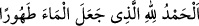
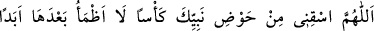
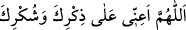
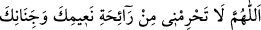
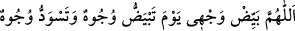
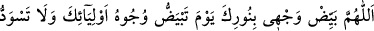
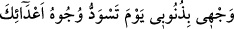

kıraatini dinler. O kişiye iyice yaklaştıktan sonra ağzını onun ağzına koyar. Öyle ki
onun ağzından bir Kur’ân kırâatı çıktığında meleğin karnına girer. Şu halde
ağızlarınızı Kur’ân için temizleyiniz.”[259] Bir hadiste de şöyle buyurulmuştur:
“Misvaklanmış olarak kılınan iki rekat namaz misvaksız kılınan yetmiş rekat
namazdan efdaldir.”[260]
Abdest alan kişi besmeleden sonra:
“Suyu temiz kılan Allah’a hamd olsun.” der.
Mazmaza esnasında (ağza su alırken)
“Allahım bana, Nebî’nin havzundan bir kâse içir, artık bir daha ebediyyen
susamayayım. Bana seni zikretmem, sana şükretmem ve kitabını okumam için yardım
et.”
İstinşak (burna su verme) esnasında:
“Allahım! Beni nîmetlerinin ve cennetlerinin kokusundan mahrum etme.”
veya şöyle der:
“Allahım! Bana cennetin kokusunu koklat, cehennemin kokusunu koklatma.”
Yüz yıkandığında:
“Allahım kimi yüzlerin ak, kimilerinin kara olduğu günde benim yüzümü ağart.”
veya şunu söyler: